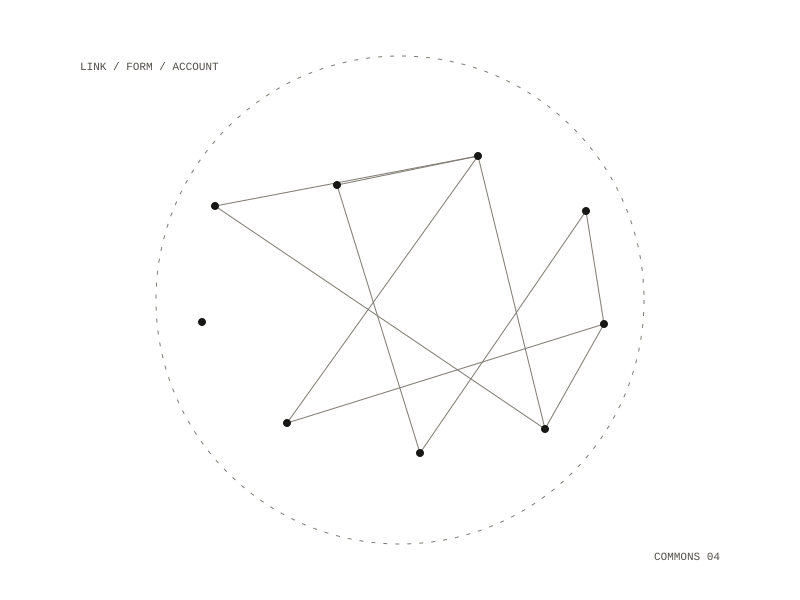

invite-service
One link, handed to one person, that turns into an account on the commons' git server with an assistant already connected to it. It replaces six manual steps split between two people, from creating the account to sending a password through a chat app to picking token scopes, with a link and a form. It does not replace the deciding: an account exists only because someone with push access to the invite ledger issued a code, and the service can read invite records but never write one.

How it goes
An operator runs a script that prints an address and a code; the code is printed once and only a hash of it is stored. The person opens the address and fills in one form with a username, email, password and the code. The account is created and put on the same teams as a template account, a token is minted and checked, and install commands are shown pre-filled, all on one page, once. The service then reads the new account back and compares it with the template; the page claims the same access only if that comparison passed.
Narrowing the risk
Creating an account needs a site-admin token behind an internet-facing endpoint, and no smaller token can do it. So the service uses a dedicated account, cannot issue invites, has a client with no delete call and no way to set the admin flag, exposes one route, and defaults to dry run with a rate limit and a global cap. A terminal script does the whole flow instead, with the admin token in the operator's shell for thirty seconds and never on the internet.
Choices
- The person chooses their own password on the form, so none is handed over; the notes call this a strict improvement on the old flow rather than an absolute claim. An invite issued with
--generate-passwordhas the service make a password instead and show it once. - There is no copy button, because it would need JavaScript and the content-security policy forbids it on a page showing a live credential.
- The code is a form field and never part of a URL, so it stays out of browser history and screen shares.
- A code works once, or as many times as
--max-usesallows, and the limit is enforced by the git server: creating a redemption file that already exists fails atomically.
A demo script runs the real service locally against a fake git server held in memory, with plain Python and nothing installed, so the pages can be reviewed without an admin token.
one form at /join, and two health paths
a git repository holding only hashes and the last eight characters of each minted token, never a code, password or token